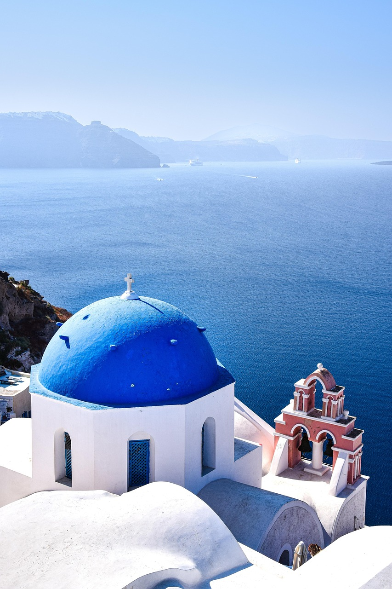
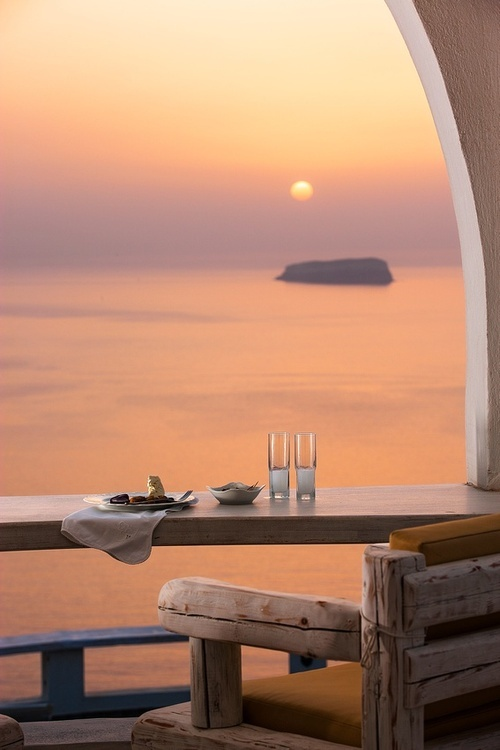

O que fazer em Santorini:
- Realizar uma caminhada desde Fira até Oia
- Relaxar na praia Kamari
- Explorar Amoundi Bay
- Visitar a Black Sand Beach
- Desfrutar do pôr do sol em Oia
- Conhecer a Red Beach
- Viajar no teleférico de Santorini
- Fazer uma excursão num cruzeiro pela caldeira de Santorini
- Visitar a Ancient Thera

Os melhores restaurantes:
- Eperisma Bar-Restaurant
- Marinera
- Beefbar Santorini
- Pyrgos Restaurant
- Le Moustache Caldera Pool Lounge & Restaurant
- Lycabettus Restaurant
- Tholoto Brunch & Restaurant
- La Maison
- The Athenian House
- Kookoo Bar Restaurant Rooftop View
- Ammoudi Fish Restaurant
- Kapari Wine Restaurant

Onde ficar hospedado:
- Orama Hotel & Spa
- Aelia Luxury Suites
- Santorini Katelli Resort
- Onar Villas
- Abrazo Villas
- White Pearl Villas
- Nous Santorini
- Costa Grand Resort & Spa
- Tholo Resort
- Melidoia Suites
- Elysian Retreat